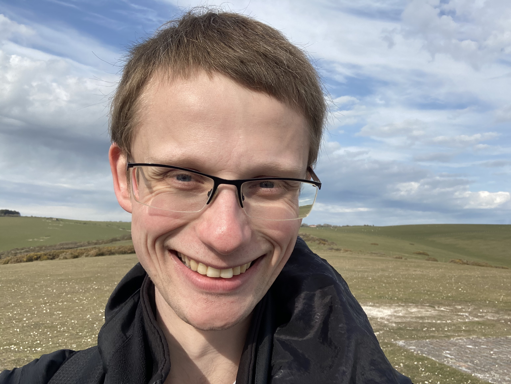
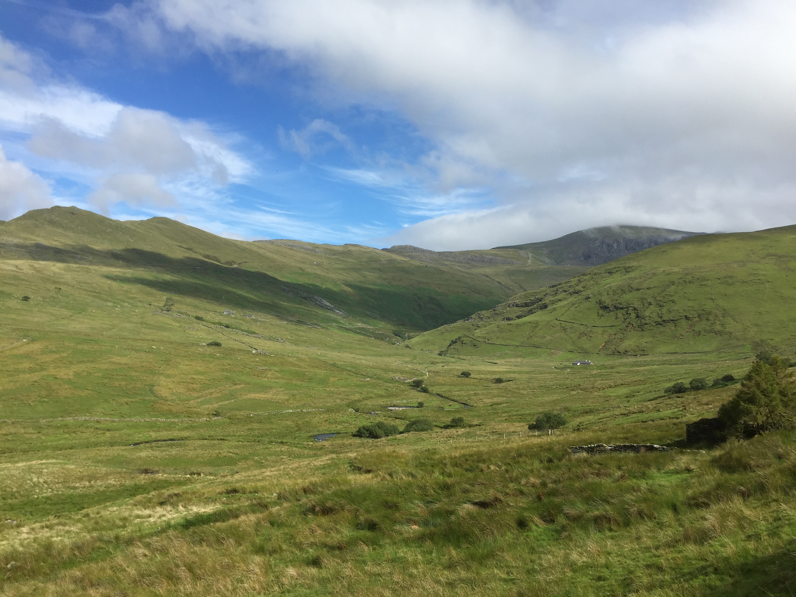

My name is Sam Jackson. I am an Assistant Professor at Durham University, UK.


My research interests lie primarily in the statistical analysis of computer models, as utilised to aid the understanding of complex physical processes, in particular;
-
Uncertainty quantification of the major sources of uncertainty in the models and their links to the corresponding physical systems, along with appropriate propagation of uncertainty through any statistical analysis to decision making.
- Bayesian emulation of computationally intensive models to facilitate comprehensive analysis of model behaviour across possibly high-dimensional parameter spaces. Such emulation is essential for performing many analyses involving the models, including sensitivity analysis and optimisation. Two of my main interests in this field are;
- the development of emulation tools for analysing networks of computer models, where many of the models’ inputs are taken to be outputs to previous models. Efficient emulation of spatial and temporal models as part of a larger network of models forms a large part of my research interests in this area.
- effective exploitation of boundaries in parameter space along which model behaviour is known, in order to aid the development of more efficient emulation techniques.
-
Design of physical system experiments for history matching, seeking those experiments that are expected to be most informative in accordance with large classes of possible specific scientific criteria.
-
Comparison of ensembles of models using Approximate Bayesian Computation and history matching techniques. This is informative for scientists looking to gain insight into the merits and drawbacks of several different computer models, and for the potential development of Bayesian Model Averaging techniques.
- Application of the above to a wide range of disciplines, including defence threat reduction, epidemiology, medical imaging and systems biology.
Apart from computer models, I have also done work studying high-dimensional microarray data, spatial statistics looking at volcanic activity across Earth, and classification for materials science.
